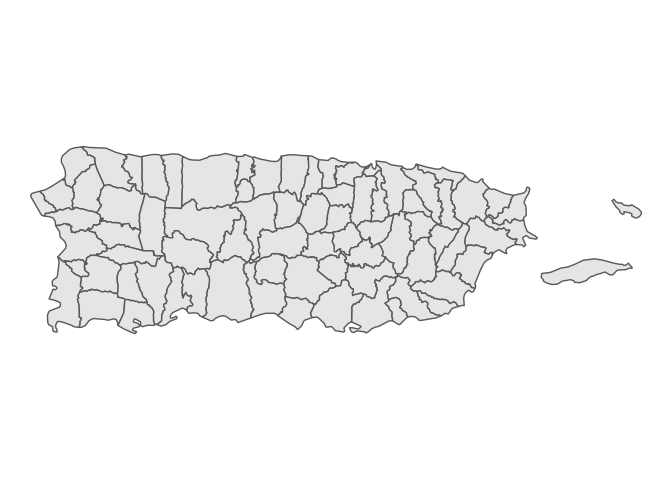
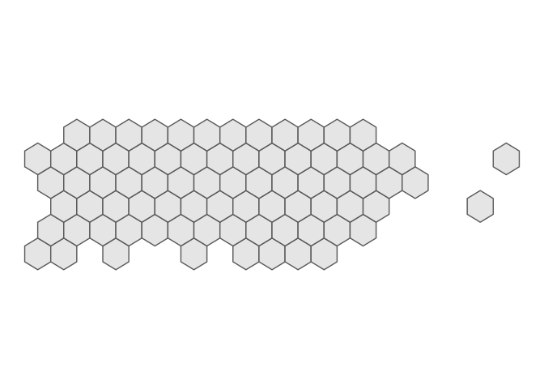

The goal of tidymapgrid is to …
Installation
You can install the released version of tidymapgrid from GitHub with:
Example
This is a basic example which shows you how to obtain the grid for your map.
json_url <- 'https://raw.githubusercontent.com/ian-flores/Hurricane_Maria_Mortality_Analysis/master/analysis/data/pueblos.json'
pueblos <- st_read(json_url)
#> Reading layer `pueblos' from data source `https://raw.githubusercontent.com/ian-flores/Hurricane_Maria_Mortality_Analysis/master/analysis/data/pueblos.json' using driver `GeoJSON'
#> Simple feature collection with 78 features and 3 fields
#> geometry type: POLYGON
#> dimension: XY
#> bbox: xmin: -67.27135 ymin: 17.92688 xmax: -65.24442 ymax: 18.51576
#> epsg (SRID): 4326
#> proj4string: +proj=longlat +datum=WGS84 +no_defs
ggplot(pueblos) +
geom_sf() +
theme_void()
